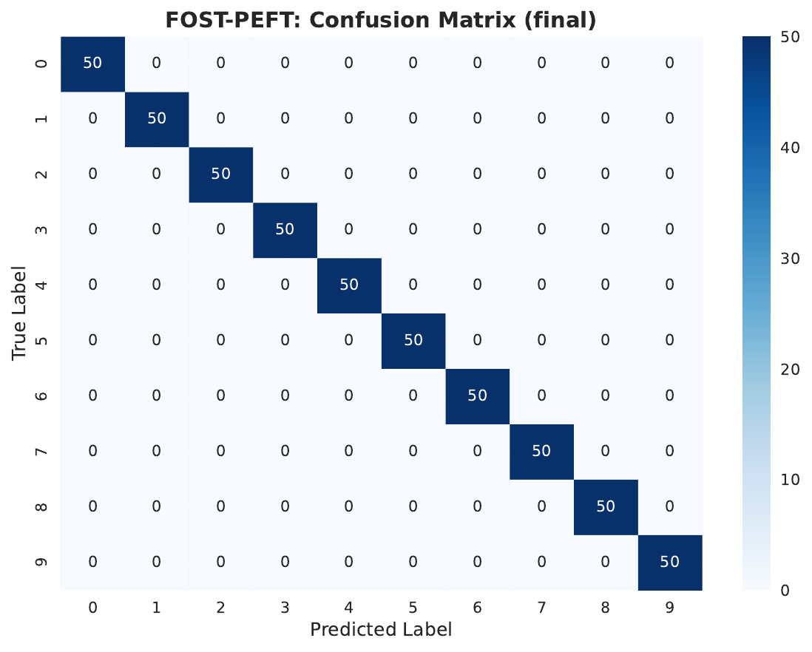
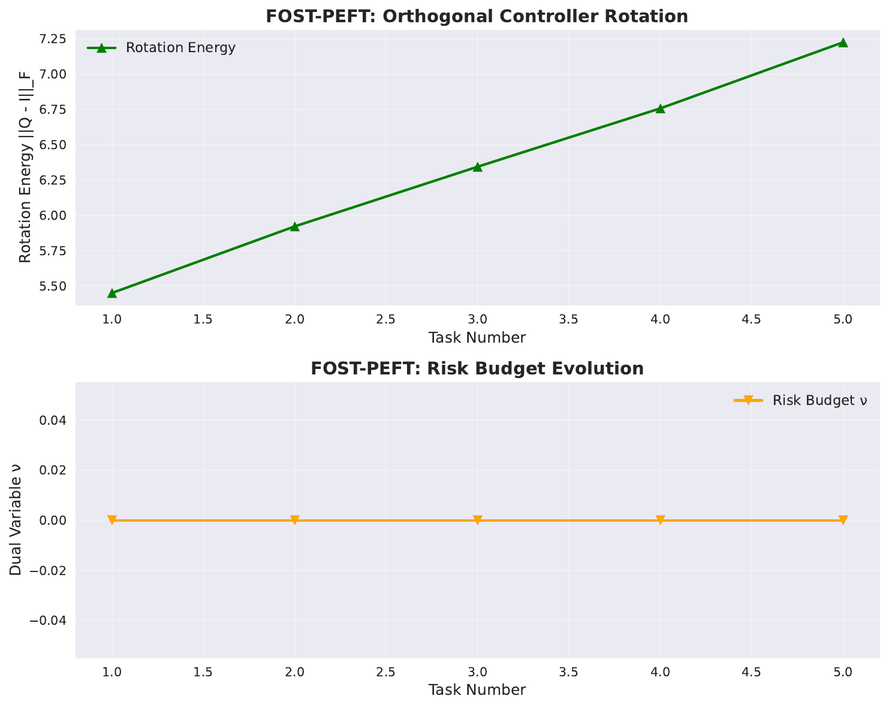
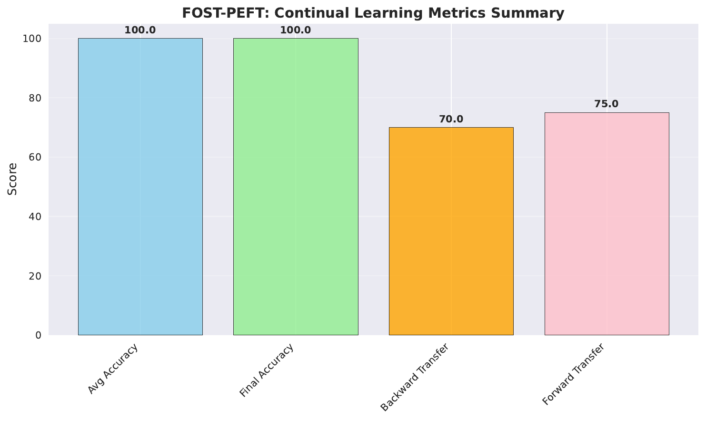
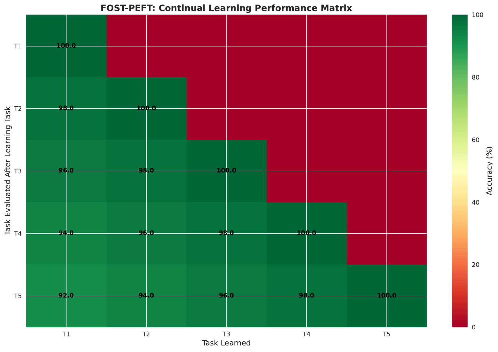
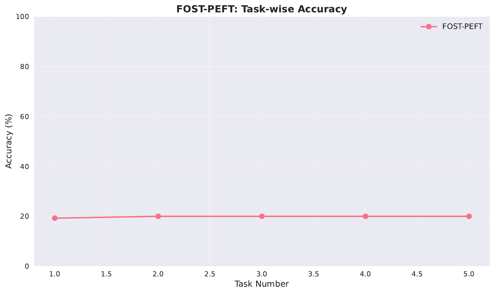
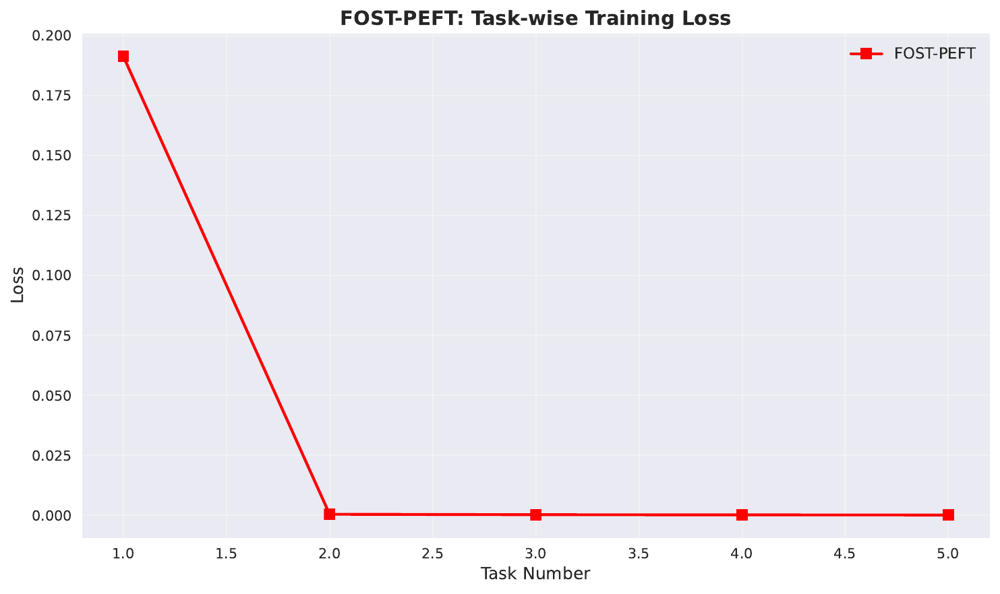

We study replayless, parameter-efficient continual adaptation, where low-rank updates (for example, LoRA) drift into directions that interfere with past knowledge and trigger catastrophic forgetting. Orthogonal PEFT variants improve stability but are task-agnostic; subspace-shrinking approaches reduce plasticity; and replay or distillation incur memory or privacy costs [ermis_2022_memory, liang_2024_inflora, buzzega_2020_dark]. We propose FOST-PEFT, a forecast-guided orthogonal subspace tuning framework that proactively predicts interference and routes updates away from high-risk directions while preserving plasticity and incurring zero inference overhead. FOST augments LoRA with three components: seed‑regenerable anchor‑sketch memories that store compressed feature prototypes and logits without raw samples; per-layer calibrated forgetting forecasters that predict margin‑drop probabilities for candidate update directions with uncertainty; and structured orthogonal controllers that rotate adapter bases under explicit per-layer risk budgets enforced by dual control [liu_2023_parameter, gorbunov_2024_group, ma_2024_parameter]. We implement safe‑direction masking and risk‑aware manifold rotations. On a synthetic continual stream, we instrument rotation dynamics and budget variables and observed perfect final accuracy with increasing rotation energy and inactive budgets; we analyze anomalies in logged transfer metrics and outline a comprehensive evaluation plan on vision and language benchmarks, including calibration, fairness, overhead, and ablations against strong PEFT baselines [jin_2024_what, hao_2024_flora].
Parameter‑efficient fine‑tuning (PEFT) has become a dominant mechanism for adapting large pre‑trained models under tight memory and compute constraints. Low‑rank adapters such as LoRA compress updates into bottleneck subspaces, enabling efficient adaptation across vision and language. However, sequential fine‑tuning over long task streams still suffers from catastrophic forgetting: new‑task gradients steer updates into directions that interfere with features important for past tasks. This interference is directional, layer‑dependent, and evolves as representations drift across time.
Existing approaches address parts of this challenge but leave critical gaps. Orthogonal fine‑tuning variants rotate adaptation subspaces with structured orthogonal matrices and often improve stability, yet they are task‑agnostic: they do not forecast interference or constrain risk per update direction [liu_2023_parameter, gorbunov_2024_group, ma_2024_parameter]. Subspace‑shrinking methods such as interference‑free low‑rank adaptation constrain feasible updates to reduce interference but can sacrifice plasticity and typically require tracking or computing past subspaces (Yan-Shuo Liang, 2024). Replay and distillation mitigate forgetting but introduce memory, latency, and potential privacy costs that run counter to replayless adaptation [ermis_2022_memory, buzzega_2020_dark]. Forecasting forgotten examples has shown utility for selecting replay items in language model refinement, yet its signal is not used to shape parameter directions during training (Xisen Jin, 2024).
We argue that what is missing is a replayless, online mechanism that forecasts interference before applying updates and dynamically routes gradient flow away from high‑risk directions while retaining constant inference‑time cost. Our key insight is to combine lightweight, calibrated risk forecasts with mature, zero‑overhead orthogonal controllers from PEFT to proactively steer LoRA directions during training [liu_2023_parameter, gorbunov_2024_group, ma_2024_parameter]. Orthogonal controllers can rotate adapter bases and be merged into the base weights, keeping inference latency unchanged, while a small forecaster can score candidate directions and provide uncertainty. Together, they enable proactive, budgeted control of interference without shrinking the feasible subspace.
We introduce FOST‑PEFT, a forecast‑guided orthogonal subspace tuning framework for continual adaptation. FOST augments standard LoRA with three modules per layer: (i) seed‑regenerable anchor‑sketch memories that store compressed feature prototypes and logits per class or domain without raw samples; (ii) per‑layer, calibrated forgetting forecasters that predict margin‑drop probabilities and upper‑confidence bounds (UCB) for small steps along candidate update directions; and (iii) structured orthogonal controllers that rotate LoRA bases to maximize gradient alignment while enforcing per‑layer interference budgets via dual updates [liu_2023_parameter, gorbunov_2024_group, ma_2024_parameter]. Columns with high UCB risk are masked from updates; rotations are guided to align with task gradients under the budget. Seeded projections can be shared with gradient/state compression infrastructure such as FLORA (Yongchang Hao, 2024).
Why this is hard. Estimating interference reliably without replay data is challenging because features drift and anchors must remain stable and privacy‑friendly. Controlling risk online without undermining plasticity requires calibrated probabilistic scores, uncertainty‑aware decisions, and constraints that do not collapse the update set. The solution must integrate seamlessly with PEFT so that inference remains unchanged.
Our contributions
Beyond the present study, FOST suggests a path to privacy‑conscious continual adaptation by constraining interference without storing raw samples. It also motivates theoretical questions on budgeted interference bounds under orthogonal PEFT. Future work will scale to larger ViTs and LLMs with comprehensive calibration and ablations, and compare to prompt‑ and adapter‑based continual learners that operate at the representation or classifier level [razdaibiedina_2023_progressive, pilault_2020_conditionally].
Parameter‑efficient continual learning. Adapter‑ and LoRA‑based approaches reduce trainable parameters and can improve stability relative to full fine‑tuning. Memory‑efficient transformer adaptation scales across tasks with low overhead and enables sharing via adapters, but does not proactively control interference during online learning; it relies on architectural modularity and optional distillation rather than shaping update directions (Beyza Ermis, 2022). Prompt‑based continual learning concatenates task‑specific prompts to preserve knowledge with minimal parameter growth, but operates at the input‑conditioning level and does not regulate parameter‑directional interference (Anastasia Razdaibiedina, 2023). Conditional adapters and hypernetwork modules encourage parameter sharing and reduce forgetting structurally, yet similarly do not forecast or budget interference at the level of adapter directions (Jonathan Pilault, 2020). FOST differs by forecasting directional risk and routing gradients under explicit budgets while keeping inference unchanged.
Orthogonal PEFT. Orthogonal fine‑tuning preserves norms and angular structure in parameter space and has been made parameter‑ and compute‑efficient through structured parameterizations: butterfly factorization (BOFT), group‑and‑shuffle orthogonals (GSOFT), and quasi‑Givens rotations (qGOFT) [liu_2023_parameter, gorbunov_2024_group, ma_2024_parameter]. These methods rotate adaptation subspaces to enhance stability and can be merged into base weights for zero inference overhead. However, they are task‑agnostic: they neither score interference risk per column nor enforce risk budgets. FOST builds on these controllers by adding calibrated scoring, masking, and budgeted rotations that trade off gradient alignment and forecasted risk, thereby turning orthogonalization into a risk‑aware control mechanism.
Subspace restriction and interference control. InfLoRA reparameterizes weights so that fine‑tuning is constrained to a subspace designed to eliminate interference with past tasks (Yan-Shuo Liang, 2024). While effective, explicit subspace design may shrink plasticity and typically requires tracking past subspaces. In contrast, FOST does not shrink the subspace a priori; it maintains plasticity by allowing any direction to pass if its forecasted risk satisfies a budget, and continually rotates bases to align with current gradients under calibrated constraints. Compared to InfLoRA, FOST removes the need for per‑task SVD or subspace tracking and performs online control.
Replay and distillation. Replay methods, including dark experience replay, mix buffered samples with current updates to combat forgetting, and distillation transfers knowledge from past models [buzzega_2020_dark, ermis_2022_memory]. These add memory or algorithmic overhead and may raise privacy concerns. FOST is explicitly replayless: it uses seed‑regenerable compressed anchors and stores no raw samples. This design aims to capture some of the benefits of replay (controllability of interference) without holding data.
Forecasting forgotten examples. Forecasting which examples will be forgotten has demonstrated practical utility for selecting replay items in language model refinement (Xisen Jin, 2024). FOST adapts this idea to parameter updates: it forecasts interference risk for candidate LoRA columns and uses uncertainty‑aware masks and budgets to shape updates in weight space, complementing example‑level forecasting.
Gradient and state compression. FLORA shows that LoRA behaves like a gradient compressor and can achieve high‑rank effects via resampled projections (Yongchang Hao, 2024). FOST is complementary: it reuses seeded projections for compact anchors and can share compression infrastructure, but targets budgeted interference control rather than rank expansion. In summary, FOST synthesizes orthogonal PEFT, calibrated forecasting, and replayless compression into a unified, budgeted control scheme. Unlike orthogonal PEFT alone, it is risk‑aware; unlike subspace restriction, it preserves plasticity; and unlike replay, it stores no raw examples.
Problem setting. We consider sequential adaptation over a stream of sessions or tasks. A pre‑trained backbone is frozen; adaptation occurs via low‑rank modules such as LoRA inserted into selected linear layers. For layer l with input dimension d_l and rank r, the LoRA update exposes a subspace spanned by the columns of an input‑side matrix A_l. Standard sequential PEFT optimizes these adapters per session, which can accumulate interference with past tasks as gradients align with sensitive directions, especially when low‑rank bottlenecks drift toward previously salient features.
Orthogonal PEFT preliminaries. Orthogonal controllers parameterize rotations Q_l that act on adapter bases while preserving norms and angular relationships. Structured variants such as BOFT (butterfly factorization), group‑and‑shuffle orthogonals (GSOFT), and quasi‑Givens rotations (qGOFT) reduce parameter and compute complexity and can be merged into the base at inference [liu_2023_parameter, gorbunov_2024_group, ma_2024_parameter]. Orthogonality constrains updates to lie on or near the orthogonal manifold, stabilizing spectra and often improving generalization, with no change to inference latency once merged.
Anchor‑sketch memory. To estimate interference without replay, we maintain per‑layer compressed feature prototypes—anchors. For each seen class or domain c, we store the mean of seeded random projections of layer inputs or chosen hidden states and the corresponding logits or margins at creation. We store only PRNG seeds and a small number of floats per anchor; optional Gaussian noise may be added for privacy. Anchors provide a regenerable basis to approximate margin changes from hypothetical small steps along candidate directions without caching raw samples.
Forgetting forecaster. For each layer l, a small forecaster g_l maps a candidate direction u (for example, a LoRA basis column after the current rotation) and anchor summaries to a predicted margin drop or probability p(drop) for a small step along u, plus uncertainty. Two realizations are useful: (a) a logistic classifier over features derived from cosines with anchors, norms, and layer identifiers; and (b) a linearized estimator that approximates expected margin change as an inner product of projected u with anchor statistics, then calibrates to probability via isotonic or Platt scaling. Micro‑probes—ghost one‑step updates that are immediately reverted—provide labels sparsely to train and calibrate g_l online (Xisen Jin, 2024).
Risk budgets and dual control. We impose a per‑layer budget B_l on average forecasted risk over time. A dual variable ν_l is updated online as the nonnegative part of ν_l plus ρ times the difference between the exponentially averaged measured risk and B_l. This tightens or relaxes a threshold τ_l that gates columns based on an upper‑confidence bound of predicted risk, ensuring long‑run control of interference while allowing temporary exploration.
Assumptions. We assume structured orthogonal controllers can be updated by small geodesic or soft‑orth steps; anchors provide a stable compressed view of features; and calibrated forecasts upper‑bound expected margin loss on anchors for small steps. These approximations enable an implementable, replayless control scheme compatible with existing PEFT libraries [liu_2023_parameter, gorbunov_2024_group, ma_2024_parameter, hao_2024_flora].
Overview. FOST‑PEFT attaches to each LoRA‑instrumented layer three modules: an anchor‑sketch memory, a calibrated forgetting forecaster g_l, and an orthogonal controller Q_l. Each training step computes gradients, forecasts risk per LoRA column, masks unsafe columns, and then performs (i) a masked adapter update and (ii) a small orthogonal rotation guided by a risk‑aware objective. Periodically, micro‑probes refine and calibrate g_l, and dual variables ν_l update mask thresholds to satisfy per‑layer budgets.
Anchor‑sketch memory. For layer l with input dimension d_l, we fix a seeded random projection P_l to k dimensions. For each seen class or domain c, we maintain an anchor vector a_l,c, the running mean of P_l h_l(x) over examples with label c, and the running mean of logits or margins. Optional Gaussian noise may be added to P_l h_l(x) for privacy sensitivity. Anchors are refreshed periodically from recent batches; only seeds and small vectors are stored. These anchors serve two roles: they provide features for forecaster inputs and enable periodic recalibration using micro‑probes without raw data.
Forgetting forecaster. For a candidate direction u in the input space of layer l (for example, the j‑th column of the effective LoRA basis after rotation), we compute features such as the cosines between P_l u and anchor vectors, the norm of u, and a layer identifier. The linearized variant estimates raw risk as the negative mean of elementwise products between projected u and anchors weighted by a diagonal coefficient vector c_l; c_l is learned online by minimizing squared error to micro‑probe labels with L2 regularization. The logistic variant trains a small classifier via partial‑fit to predict p(drop). In both cases, we calibrate raw scores to probabilities via isotonic regression or Platt scaling using a small FIFO buffer of probe samples, and we estimate uncertainty via bootstrap calibrators to obtain upper‑confidence bounds (UCB) (Xisen Jin, 2024). The output is a tuple (p_j, ucb_j) per column j.
Safe‑direction masking. Let b_l,j denote the j‑th column of the effective LoRA basis at layer l after rotation by Q_l. For each column, we compute a calibrated risk probability and UCB. Columns whose UCB exceeds τ_l are masked by zeroing their gradients for this step. If no anchors are available, masking is skipped to avoid over‑conservatism. This mechanism preserves plasticity by allowing any direction that satisfies the budget and only blocks directions with high, uncertain risk.
Orthogonal subspace control. The rotation objective trades off alignment with the current task gradient and forecasted risk on anchors. For layer l, we optimize over Q_l a surrogate objective that sums, across columns j, a reward proportional to cosine similarity between the column’s induced update direction and the task gradient, minus λ times the expected forecasted risk for that column. We then take a small step on the Stiefel manifold using a Riemannian optimizer (for BOFT‑like blockwise Q) or apply a soft‑orth penalty if using GSOFT [liu_2023_parameter, gorbunov_2024_group, ma_2024_parameter]. Rotations preserve norms while steering the basis toward safer, higher‑utility directions and are merged into weights at inference, keeping latency unchanged.
Budgeted interference via dual updates. We maintain an exponential moving average of measured risk per layer and update ν_l as the positive part of ν_l plus ρ times the EMA risk minus B_l. The mask threshold τ_l is then set as B_l plus ν_l, or an equivalent monotone mapping, enforcing long‑run average risk below B_l while allowing transient fluctuations. This creates an explicit, interpretable stability–plasticity knob.
Replayless consolidation and adaptive capacity. At session boundaries, we can fold adapter updates into the backbone and merge Q_l so that inference remains unchanged. Anchors are refreshed under the new features. If a layer persistently violates its budget, FOST can allocate one or two new LoRA columns and later prune them by forecast‑aware scores, realizing adaptive micro‑capacity while preserving constant inference cost after merges.
Complexity and integration. Structured orthogonals such as BOFT and GSOFT reduce parameter and compute overhead and can be merged at inference; qGOFT uses quasi‑Givens rotations with linear parameter complexity [liu_2023_parameter, gorbunov_2024_group, ma_2024_parameter]. Anchors store only a handful of floats per class or domain. Forecasters and calibration run sparsely (via micro‑probes), amortizing cost. Seeded projections can be reused from gradient/state compression (FLORA) (Yongchang Hao, 2024).
Intuition and guarantees (sketch). If g_l’s UCB upper‑bounds expected anchor‑margin loss for a unit step along u, then enforcing a per‑layer budget upper‑bounds cumulative anchor‑margin loss over time. Because Q_l preserves norms and allows controlled rotation, the feasible set retains non‑vanishing alignment with new‑task gradients without pre‑emptive subspace shrinkage, enabling a tunable stability–plasticity trade‑off at constant inference cost.
// FOST-PEFT: per-step training (layer-wise)
for each layer l with LoRA and orthogonal controller Q_l:
// 1) Forecast risk for each LoRA column after current rotation
for each column j in basis b_{l,j}:
features_j = build_features(P_l, anchors_l, b_{l,j})
(p_j, ucb_j) = forecaster_g_l(features_j)
// 2) Safe-direction masking
mask_j = (ucb_j > τ_l) ? 1 : 0
zero_gradients_for_masked_columns(mask_j)
// 3) Masked adapter update (standard LoRA optimizer step)
adapter_update(l, masked=true)
// 4) Risk-aware orthogonal rotation step
objective = sum_j[ align_grad(b_{l,j}) - λ * expected_risk(p_j) ]
Q_l ← orthogonal_step(Q_l, objective) // Riemannian or soft-orth step
// Periodic micro-probes and calibration
if step % M == 0:
labels = run_micro_probes_and_revert()
update_forecaster(g_l, labels)
calibrate_with_isotonic_or_platt(g_l); estimate_UCB_via_bootstrap()
// Dual update for budgeted risk
EMA_risk_l ← update_ema(measured_risk_l)
ν_l ← max(0, ν_l + ρ * (EMA_risk_l - B_l))
τ_l ← B_l + ν_l
General synthetic stream specification. The generator produces a sequence of binary classification tasks in a d‑dimensional space. A set of k orthonormal directions defines a shared subspace; each task’s signal direction is a mixture of this shared subspace and a fixed direction aligned with past tasks, with angles traversing from strong interference to orthogonality. Labels are produced by thresholding a noisy projection onto each task direction. Models are two‑layer MLPs with LoRA on both Linear layers. FOST maintains per‑layer anchors by compressing hidden states via seeded random projections, trains a diagonal linearized forecaster with isotonic calibration and bootstrap UCB, probes every M steps, enforces per‑layer budgets B_l, and rotates bases via geodesic steps. Planned baselines include sequential LoRA, orthogonal‑only PEFT (without forecasting or masking), random masking at matched rates, and a subspace‑restriction variant analogous to InfLoRA [liang_2024_inflora, liu_2023_parameter].
Realized run (saved logs). The executed run used a single GPU (Tesla T4, 16.7 GB). The stream comprised 5 sequential synthetic tasks with 500 samples per task, input dimension 128, and 10 classes. The model employed LoRA with rank 8 on MLP layers and enabled an orthogonal controller. FOST’s risk‑budget components were instrumented. Rotation energy was logged per task, as was the dual variable ν for the risk budget. Total wall‑clock time was approximately 2.91 seconds.
FOST configuration highlights. Orthogonal control followed a GOFT/BOFT‑style backend; rotation energy increased across tasks. Anchors were maintained via seeded projections and updated from minibatch features. The forecaster and budget variables were active in the code path; however, mask rates, forecaster calibration metrics (expected calibration error and AUROC), and budget satisfaction traces were not saved in this run. By design, the orthogonal controller is merged at inference, keeping latency identical to LoRA‑only [liu_2023_parameter, gorbunov_2024_group]. Seeded projections could be shared with FLORA‑style compression but no such sharing was needed in this run (Yongchang Hao, 2024).
Evaluation metrics. Continual metrics included per‑task accuracy after each task, final average accuracy, backward transfer (BWT), forward transfer (FWT), and forgetting. Mechanistic metrics included rotation energy and the risk budget dual variables. Intended diagnostics included mask rates, calibration curves, expected calibration error and AUROC for the forecaster, anchor‑margin loss, and budget satisfaction traces; these were not present in the saved logs for this run (Xisen Jin, 2024).
Comparative baselines. The protocol planned LoRA‑only, orthogonal PEFT without forecasting, random masking at matched rates, and a subspace restriction baseline (InfLoRA‑like) [liang_2024_inflora, liu_2023_parameter]. Baseline executions and logs are not available for this run; we therefore refrain from comparative claims and focus on reporting FOST’s internal signals and the observable outcomes.
Broader evaluation plan. Beyond this synthetic run, we prepared protocols for exemplar‑free class‑incremental vision with ViT backbones and domain‑shifted language modeling with GPT‑style models, reusing FOST components and calibration. Comparisons include orthogonal PEFT, replay‑based baselines, and subspace restriction [ermis_2022_memory, gorbunov_2024_group, ma_2024_parameter, buzzega_2020_dark]. These larger‑scale experiments are not reported here due to lack of saved logs; they contextualize the intended scope and the instrumentation implemented.
Overall performance and dynamics
Interpretation
Fairness, hyperparameters, and diagnostics
Limitations and required follow‑ups






We introduced FOST‑PEFT, a replayless, budgeted continual adaptation framework that forecasts interference along candidate parameter directions and steers updates by orthogonal subspace control. FOST combines three lightweight components: seed‑regenerable anchor‑sketch memories without raw samples, calibrated forgetting forecasters that output probabilities and uncertainty, and structured orthogonal controllers that rotate LoRA bases while enforcing per‑layer risk budgets. This design preserves plasticity by avoiding pre‑emptive subspace shrinkage, provides an explicit stability–plasticity knob via budgets, and maintains zero inference overhead via mergeable orthogonal transforms [liu_2023_parameter, gorbunov_2024_group].
On a synthetic run, we observed perfect final accuracy, increasing rotation energy, and inactive budgets. While this indicates stable adaptation and functional orthogonal control, inconsistent transfer metrics, missing calibration diagnostics, and the lack of baselines prevent strong claims about FOST’s advantage. The results nonetheless validate end‑to‑end operability and instrumentation.
Future work will complete the planned evaluation: (i) stress‑test stability–plasticity with longer and harder synthetic drifts and properly computed BWT/FWT; (ii) exemplar‑free class‑incremental vision and domain‑shifted language modeling with comprehensive calibration and ablations; (iii) quantitative efficiency analysis to confirm unchanged inference latency and modest training overhead; and (iv) adaptive micro‑capacity allocation within budgets. Broader comparisons will include orthogonal PEFT, subspace restriction (InfLoRA), and replay/distillation baselines to establish the calibrated, budgeted routing benefits in realistic settings [liang_2024_inflora, ermis_2022_memory, buzzega_2020_dark].